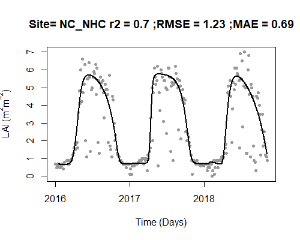
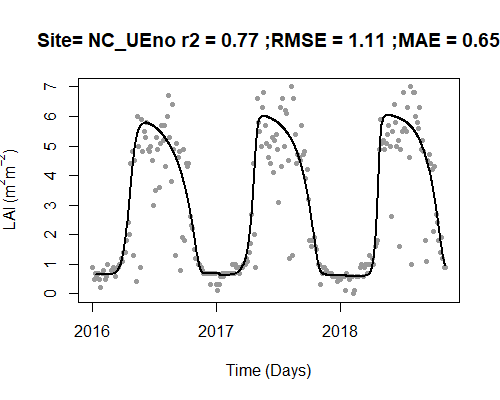

vignettes/Download and process MODIS LAI.Rmd
Download and process MODIS LAI.RmdThere are a variety of sources for LAI data, but for convenience a function is included to process two MODIS LAI products: 1.) MCD15A3H.006 which has 4 day temporal resolution and a pixel size of 500m, and 2.) MCD15A2H.006 which has 8 day temporal resolution and a pixel size of 500m. This example uses MCD15A3H but once the data has been downloaded the process is the same for either product. These products are downloaded through the AppEEARS website.
A .csv of Site_ID, Lat and Lon can be used to submit a request that extracts point samples from multiple locations.
#Make a table for the MODIS request
request_sites <- sites[, c("Site_ID", "Lat", "Lon")]
#Export your sites as a .csv for the AppEEARS request
write.table(
request_sites,
paste0(working_dir, "/NC_sites.csv"),
sep = ",",
row.names = FALSE,
quote = FALSE,
col.names = FALSE
)The functions in StreamLightUtils are based on accessing LAI data through the AppEEARS website. This requires a NASA EARTHDATA account to access so if you do not already have an account you may register here. Once registered, you can begin by making a request:
Drag and drop site locations
Example of request submission
Once everything is filled out submit the request. You will recieve an email notification of the request and then a second notification when the download is ready. Downloads are typically ready the same day or within a day or two depending on the size of the request. For reference, the request in this example only took 15 minutes the complete.
Once the download is ready it can be processed using two built-in functions to StreamLightUtils. The downloaded .zip file can be unpacked using AppEEARS_unpack_QC which has the following structure:
AppEEARS_unpack_QC(zip_file, zip_dir, request_sites)
zip_file The name of the zip file. For example, “myzip.zip”
zip_dir The directory the zip file is located in. For example, “C:/”
request_sites A string of site IDs
This function returns the unpacked data as a list, with each element in the list representing the data for a given site.
MOD_unpack <- AppEEARS_unpack_QC(
zip_file = "nc-sites.zip",
zip_dir = working_dir,
request_sites[, "Site_ID"]
)The StreamLightUtils package leverages the phenofit package to help handling the processing of LAI data. There are a variety of curve fitting methods and this tutorial uses the approach from Gu et al. (2009) The unpacked data can then be processed using AppEEARS_proc which has the following structure:
AppEEARS_proc(Site, proc_type)
Let’s process the LAI data and visualize the results. The black line is the new fitted, interpolated, daily LAI.
MOD_processed <- AppEEARS_proc(
unpacked_LAI = MOD_unpack,
fit_method = "Gu",
plot = TRUE
)
